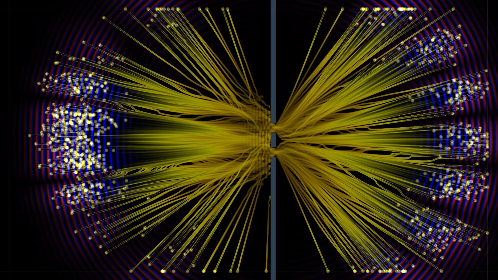

Educational notebook
Double Slit: Wave Dynamics — Numerical Notebook
Numerical wave propagation and pilot-wave trajectories.
This numerical notebook evolves the wave on a grid with a slit barrier, including reflected waves. It has its own simulation code. For a simplified forward-propagation model comparing three accounts, use Double Slit: Three Accounts — Analytical Notebook.

A Bohmian particle
In the double-slit experiment, a localized wave packet moves toward a barrier with two openings. The wave passes through both slits, spreads, and overlaps with itself, creating an interference pattern. So far the description is standard QM.
Bohmian mechanics adds a particle to the picture. The trajectory of the particle is guided by the wave. The velocity is proportional to the probability current at the location of the particle. Alternatively the guiding principle can be expressed via the phase of the wave: The particle always moves along the phase gradient.
In any case it is now clear how a single particle can "sense the both slits". Even though the particle goes through only one slit, the Schrödinger wave passes through both slits. The wave interferes with itself, as usual, creating disturbances in the phase, and these disturbances will then affect the guiding of the particle.
Click the following applet and observe a bohmian particle surfing the Schrödinger wave.
Notice how the particle follows the phase gradient. Interference distorts the phase fronts, causing the particle to bend its path.
Multiple instances at once
The individual trajectories may look complicated and their collective statistical nature may be unclear. But plotting many at once reveals the famous interference pattern emerging from a swarm of Bohmian trajectories.
Each instance of a particle is guided by the same wave, but starts at a different initial position.
Equivariance Demo
Next, let us will initialize a large number of particle instances with positions sampled from the Born density \(\rho = |\psi|^2\) at \(t=0\). We will visualize the density of the wave function. Compare the evolution of the wave density with the propagation of a very large number of particle instances. Notice how the particle swarm rearranges into the same pattern as the wave density, even though a manifestation of an individual trajectory may be complicated.
With enough initially sampled positions, the particle ensemble remains distributed like \(\rho = |\psi|^2\) as both wave and trajectories evolve.
This behaviour, that the statistical distribution of bohmian particles follows the time evolution of the squared modulus of the wave function, is called equivariance. It means the emprical probability of finding a Bohmian particle at a location, is the same as the probability of collapse to that point upon a measurement in the standard interpretation of QM.
Conclusion: the two interpretations are empirically equivalent.
Theory
The Guiding Law
The wave \( \psi = \psi(x,y,t) \) in pilot wave theory is the Schrödinger wave from standard quantum mechanics, evolving according to the Schrödinger equation:
The particle velocity is obtained from the probability current divided by the density \( \rho(x,y,t) = \left|\psi(x,y,t)\right|^2 \).
If the wave is written in polar form, \(\psi = R e^{iS/\hbar}\), then \(\rho = R^2\) it turns out the current can be written directly in terms of the phase gradient:
Thus, the Bohmian velocity is \(\mathbf{v} = d\mathbf{x}/dt = \nabla S/m\), which emphasizes the role of the wave phase gradient in the a guiding of particle motion.
In short: The density tells where particles are likely to be found, while the phase \(S\) determines the direction of the local motion.
Equivariance
The mathematical statement is that the Born density \( \rho = |\psi|^2 \), and the Bohmian particle density \( \rho_B \), satisfy the same continuity equation when particles move with \(\mathbf{v}=\mathbf{j}/\rho\):
In words: if the initial particle positions are sampled from \(|\psi|^2\), then the guidance law carries that whole distribution along with the quantum current. The swarm can rearrange into fringes, but it does not drift away from the Born density.
Original Scale Applet
For the full canvas and the original standalone layout, open the applet in a separate browser tab.